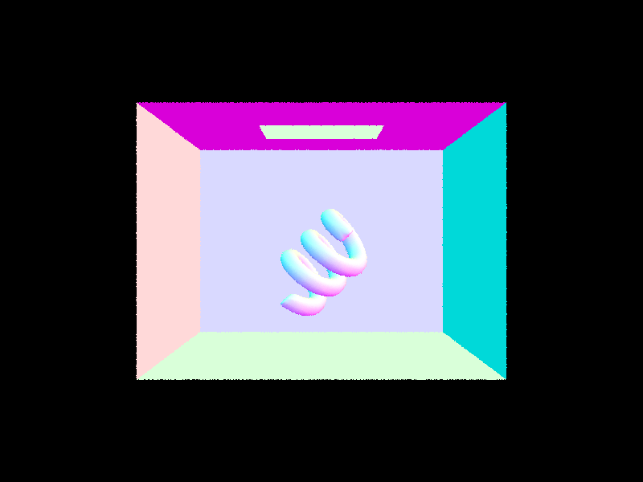

Part1: Ray Generation and Scene Intersection
Overview: The ray generation and intersection pipeline
In this part, we implemented the ray generation and intersection pipeline for the Pathtracer. The pipeline consists of the following steps:
flowchart TB
A[Pixel Sample Generation];
B[Camera Ray Generation];
C[Ray-Triangle Intersection];
D[Ray-Sphere Intersection];
A --> B;
B --> C;
B --> D;The above sections will be explained in detail in the following sections.
Pixel Sample Generation
Methodology
In the Pathtracer, each pixel of the image is sampled ns_aa times. The input pixel coordinates lie in the unnormalized image space, i.e., the range of the coordinates is from 0 to width and 0 to height.
{kind=link}
Each sample process consists of the following steps:
- Generate a random sample point in the pixel space.
- Normalize the sample point to the camera space.
- Generate a ray from the camera origin to the sample point.
- Obtain the returned color and add it to the pixel color.
Implementation
The grid sampler provided in the starter code is used to generate the sample points:
As the width and height of the camera space are 1, the sample point is normalized by dividing the sample point by the width and height of the sample buffer:
xsample_normalized = ((double)x + sample.x) / sampleBuffer.w;
ysample_normalized = ((double)y + sample.y) / sampleBuffer.h;
Finally, the ray is generated from the camera origin to the sample point, and the returned color is added to the pixel color:
// generate a random ray
r = camera->generate_ray(xsample_normalized, ysample_normalized);
// trace the ray
L_out += est_radiance_global_illumination(r);
This process is repeated for ns_aa times to obtain the final pixel color. The result is averaged and assigned to the pixel buffer.
Camera Ray Generation
Methodology
The given pixel position is in the normalized image space. After obtaining its position in the camera space, the ray direction in the camera space is determined. To generate the ray, this direction is transformed to the world space.
{kind=link}
Transforming pixel position from the normalized image space to the camera space involves translating the pixel position to the camera space and scaling it by the camera width and height. The translation matrix is given by:
The scaling matrix is given by:
The ray direction in the camera space is the vector from the camera position to the sensor position. The sensor position is obtained by changing the third component of the pixel position to -1.
The camera-to-world matrix the given and does not need to be computed.
Implementation
First, the translation matrix move_to_center and scaling matrix scale_to_sensor are defined:
// step 1: transform the input image coordinate to the virtual sensor plane coordinate
// move the input image coordinate to the center of the image plane
Matrix3x3 move_to_center = Matrix3x3(1, 0, -0.5, 0, 1, -0.5, 0, 0, 1);
// scale the input image coordinate to the sensor plane coordinate
// the virtual sensor plane is 1 unit away from the camera
Matrix3x3 scale_to_sensor = Matrix3x3(2 * tan(radians(hFov / 2)), 0, 0, 0, 2 * tan(radians(vFov / 2)), 0, 0, 0, 1);
The pixel position is transformed to the sensor position by multiplying the translation and scaling matrices:
// apply the transformation
Vector3D input_image_position = Vector3D(x, y, 1);
Vector3D sensor_position = scale_to_sensor * move_to_center * input_image_position;
The ray direction in the camera space is the vector from the camera position to the sensor position:
// step 2: compute the ray direction in camera space
// the ray direction is the vector from the camera position to the sensor position
// in camera space, camera is at the origin
// simply change the third component of the sensor position to -1
Vector3D ray_direction_in_camera = {sensor_position.x, sensor_position.y, -1};
Finally, the ray direction is transformed to the world space, and the ray is initialized.
// step 3: transform the ray direction to world space
// use the camera-to-world rotation matrix
Vector3D ray_direction_in_world = c2w * ray_direction_in_camera;
// normalize the ray direction
ray_direction_in_world.normalize();
Ray result = Ray(pos, ray_direction_in_world);
// initialize the range of the ray
result.min_t = nClip;
result.max_t = fClip;
return result;
Ray-Triangle Intersection
Methodology
We strictly followed the Moller-Trumbore algorithm to implement the ray-triangle intersection. The algorithm is based on the following steps:

Implementation
First, the Barycentric coordinates of the intersection point and its t value are obtained by the Moller-Trumbore algorithm:
// Use Moller-Trumbore intersection algorithm
Vector3D E_1 = p2 - p1;
Vector3D E_2 = p3 - p1;
Vector3D S = r.o - p1;
Vector3D S_1 = cross(r.d, E_2);
Vector3D S_2 = cross(S, E_1);
double denominator = dot(S_1, E_1);
if (denominator == 0) {
return false;
}
double t = dot(S_2, E_2) / denominator;
double b1 = dot(S_1, S) / denominator;
double b2 = dot(S_2, r.d) / denominator;
double b0 = 1 - b1 - b2;
Next, the intersection point is checked:
- If the Barycentric coordinates are inside the triangle.
- If the
tvalue is within the range of the ray.
// check if t is within the range
if (t < r.min_t || t > r.max_t) {
return false;
}
// check if b1, b2, and b3 are within the range
if (b1 < 0 || b1 > 1 || b2 < 0 || b2 > 1 || b0 < 0 || b0 > 1) {
return false;
}
If the intersection point is valid, the last step is to update the max_t value of the ray and return true.
Ray-Sphere Intersection
Methodology
For a sphere with center c and radius r, the ray-sphere intersection is calculated by solving the following quadratic equation:
where o is the ray origin, d is the ray direction, and t is the intersection point. The solution to the quadratic equation is given by:
If the part inside the square root is negative, there is no intersection. For this task, we check:
- If there is an intersection.
- If the
tvalue is within the range of the ray.
Implementation
In the test function, whether the ray intersects with the sphere is tested:
bool Sphere::test(const Ray &r, double &t1, double &t2) const {
// TODO (Part 1.4):
// Implement ray - sphere intersection test.
// Return true if there are intersections and writing the
// smaller of the two intersection times in t1 and the larger in t2.
// Implementation by Ruhao Tian starts here
// a t^2 + b t + c = 0
double a = r.d.norm2();
double b = 2 * dot(r.d, r.o - o);
double c = (r.o - o).norm2() - r2;
// check if there's valid solution
double delta = b * b - 4 * a * c;
if (delta < 0) {
return false;
}
// find the two solutions
double sqrt_delta = sqrt(delta);
t1 = (-b - sqrt_delta) / (2 * a);
t2 = (-b + sqrt_delta) / (2 * a);
return true;
}
The function has_intersection will call test and check further if the intersection point is within the range of the ray:
bool Sphere::has_intersection(const Ray &r) const {
// TODO (Part 1.4):
// Implement ray - sphere intersection.
// Note that you might want to use the the Sphere::test helper here.
// Implementation by Ruhao Tian starts here
double t1, t2;
if (!test(r, t1, t2)) {
return false;
}
// test if t1 is in the valid range
if (t1 >= r.min_t && t1 <= r.max_t) {
r.max_t = t1;
return true;
}
else if (t2 >= r.min_t && t2 <= r.max_t) {
r.max_t = t2;
return true;
}
return false;
}
Results
After implementing the ray generation and intersection pipeline, we obtained the following results:
CBspheres.dae

CBgems.dae

CBcoil.dae 
{kind=link}